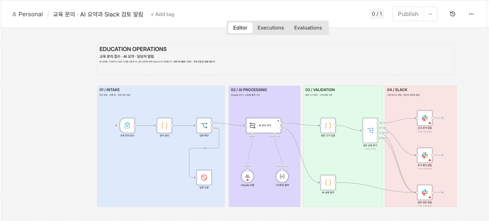
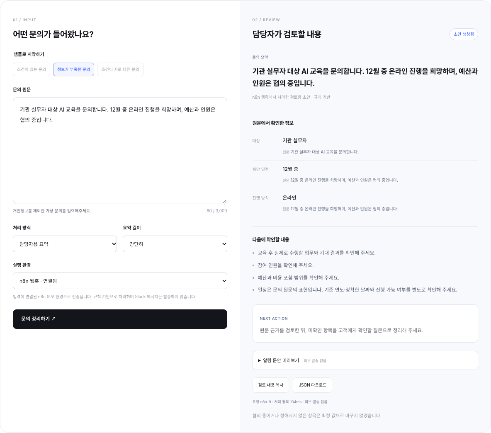

WORKFLOW AUTOMATION / 2025–2026
문의 알림과 문서 작업을 워크플로로
교육팀에서 필요한 문의 알림과 문서 작성·요약을 직접 구현했습니다. 협업 도구를 연결하는 일과 자료를 정리하는 일을 각각 n8n 워크플로로 구성했습니다.
재직 중 구현한 문의 알림과 문서 자동화 경험입니다. 아래 워크플로 구성도와 공개 체험은 이 경험을 바탕으로 새로 만든 재현 자료입니다.
교육을 진행하는 일에 운영 도구를 더했습니다.
교육팀 업무에는 교육 문의를 확인하고 자료를 작성·요약하는 작업이 함께 있었습니다. 이러한 운영 업무에 n8n을 활용했습니다.
문의 알림과 문서 작업을 각각 연결했습니다.
교육 문의 알림은 n8n과 Slack을 연결해 구현했습니다. 문서 작성과 요약도 n8n 워크플로에서 구동했습니다.
교육 문의 알림
n8n과 Slack을 연결해 문의 알림을 구현했습니다.
문서 작성·요약
문서 작업을 n8n 워크플로로 구성하고 구동했습니다.
업무에 필요한 기능을 직접 구현했습니다.
교육 운영을 경험하면서 협업 도구 연동과 문서 자동화까지 구현 범위를 넓혔습니다. 알림과 문서 작업을 워크플로로 구성해 교육팀 업무에 적용했습니다.
문의 요약과 예외 처리를 하나의 흐름으로 구성했습니다.
교육팀 자동화 경험을 바탕으로 문의 접수, Claude 요약, 원문 근거 확인, 검토 상태별 Slack 알림을 연결한 워크플로를 새로 구성했습니다.
입력 누락을 검사하고, 요약에서 추출한 값과 근거가 원문에 있는지 확인하도록 설계했습니다. 정보가 부족하거나 AI 처리가 실패한 경우에도 담당자가 추가 확인할 수 있도록 경로를 나눴습니다.


가상 교육 문의로 직접 살펴보세요.
당시 경험을 바탕으로 가상 교육 문의를 정리하는 데모를 새로 만들었습니다. 원문 근거와 추가 확인할 항목을 구분하고, 요약 길이를 바꾸거나 알림 문안을 미리 볼 수 있습니다.
공개 페이지에서는 브라우저 안에서 규칙 기반으로 실행됩니다. 같은 처리 로직을 n8n 웹훅에서도 실행해 입력부터 응답까지 확인했습니다. AI 모델 호출과 실제 Slack 발송은 이 데모에 포함하지 않았습니다.


교육팀의 문의 알림을 n8n·Slack으로 구현하고, 문서 작성·요약 워크플로를 구동했습니다.